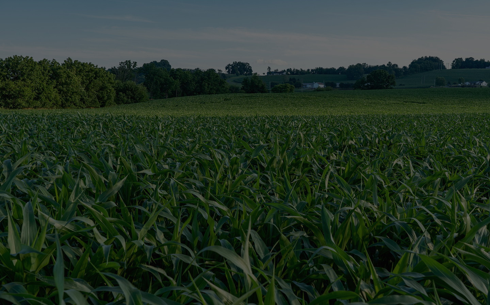

Peta Lahan
Marker dan polygon area lahan sebagai placeholder Leaflet.

Monitoring Pertanian Berbasis Peta
AgroTrack membantu petani mencatat aktivitas pertanian secara digital, menentukan lokasi lahan melalui peta, dan melihat analisis profit dengan lebih rapi.
Fitur Utama
Marker dan polygon area lahan sebagai placeholder Leaflet.
Tanggal tanam, estimasi panen, status, dan progress pertumbuhan.
Catatan biaya bibit, pupuk, pestisida, tenaga kerja, dan lainnya.
Input hasil panen, harga jual, pendapatan, dan profit.
Placeholder Chart.js untuk biaya, pendapatan, dan keuntungan.
Tabel laporan petani dan global admin untuk demo.
Tentang AgroTrack
Skeleton ini menyiapkan tampilan awal untuk proses login, dashboard, manajemen lahan, peta, musim tanam, biaya, panen, analisis, dan laporan.
Leaflet Placeholder
Peta marker dan polygon akan diintegrasikan setelah backend siap.